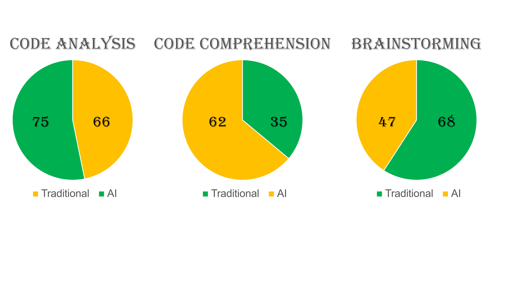
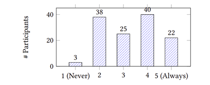

Emergence of AI
With the rise of AI or artificial intelligence, the traditional classroom learning environment comes into question. Since for the longest time teachers have utilized textbooks and paper material to reinforce learning onto the student to truly prepare them on knowing the material. Moreover, rather than having an algorithm learning the material and being tested of the knowledge of it and not the human mind.
AI Versus Human Intelligence

The Learning Environment
There are four conceptual structures or different forms that AI assistants can impose on learning environments in the classroom. It is humans, learning, organization, and disruptor. Starting with the first structure, it is the lecturer and the student. The next one is the learning experience associated in the classroom, learning assessment, and the module. The third one is university and regulation. The last one is the AI assistant involved in the classroom. The teacher or lecturer is responsible for the knowledge of topic, skill, competency, mindset, and the way of working, in which they present onto the students. Where each student is in their own degree program that has varying skills, competency, mindset, and learning style. The learning experience that a student has before going into a degree program has past knowledge of what they currently know, values, condition, skills, and tools. In which the lecturer must impose learning assessments to maintain evaluation and grading on the student.
What Changed in the Learning Environment?
The disruptor that changes the rhythm of this conceptual structure is an AI assistant placed in between the lecturer and their responsibilities to teach and the student on their responsibilities to adhere to academic integrity. In the computer science degree program, the lecturer usually imposes coding assessments and understanding algorithmic theories, in which crucial thinking and problem-solving skills are tested and grown. The student is responsible for learning the necessary programming skills and knowledge of the various algorithmic theories such as the Theory of Computing and Analysis of Algorithms.
Varying Learning Styles
With differing learning styles from varying students, the learning experience isn’t a perfect picture in the classroom, since there are different knowledge outcomes with coming to an understanding of fundamental programming concepts. There are in-person lectures or online ones, in which each learning environment has its perks and side effects on the student’s comprehension of computer science concepts. With AI assistants, traditional programming projects or assignments need to be reevaluated for the twenty-first century AI era of programming. Since what used to work on teaching the fundamentals of programming to be successful on projects now can be easily accomplished with the help of an AI assistant that the student can utilize. Adding onto the computer science world, programming assessments are heavily tested on students, and what used to be a must in searching online communities such as Stack Overflow. In addition, understanding errors in code or figuring out what knowledge was missing or lacking has been replaced by AI assistants such as GitHub Copilot.
Is it Truly Human Thinking?
A code completion assistant that can automatically input suggested code by the programmer only needs to enter a few comments in their code editor such as VS Code. Another instance within computer science is multiple-choice tests either in-person or online tests, in which using an AI assistant on the tests is a matter of using a AI on a student’s phone or laptop. Furthermore, then copying the test text as the prompt for the answer in a few seconds. Thus, accomplishing a test at a much faster speed than the prior AI era. What used to take human thinking on a test now is AI’s thinking being tested. With AI assistants abounding, what used to be a must in software or web development of achieving a computer science degree now is passed onto anyone having their AI assistant at hand and simply prompt away.
Is a Computer Science Degree Worth It?
From someone having a pre-built website without knowing the fundamentals of what their AI assistant created for them is striking. Such as, what are these HTML tags or what is this style for? And so forth, confusion arises in their presented result rather than obtaining the necessary knowledge of programming to lessen the confusion and hanging on their AI assistant’s every output as correct. Whereas when having a knowledgeable background in computer science such as a degree we can still use it but challenge the code completion when needed. Regarding the lack of knowledge about the inner workings of computer science, using AI toward completion of courses and hence moving up a student when they aren't truly ready is alarming for the student entering their field of study in the workforce.
The Outlook on Software Engineering
AI assistants such as ChatGPT, which is the first tech company to emerge generative AI to the public will aid as a programming tool in software development. However, with that anyone who has access to an AI assistant is just a prompt away to have functional code. On one hand ChatGPT can help explain and give examples pertaining to programming concepts such as syntax, data structures, algorithms, etc. For instance, a programmer could ask ChatGPT “What is the difference between a linked list and an array” and it would output a concise and elaborate answer in the form of understanding and then followed by code examples in a desired language such as Python or Java. With the benefits of using ChatGPT as one AI assistant comes with the cons of it. As such, “…some aspects of data science that previously required human interaction could become obsolete.”
Harnessing AI as a Helpful Accessory
Quote, “…AI should be seen and used as a tool for augmenting intelligence and improving human efficiency as opposed to replacing humans.” This is critical for a computer science student about to graduate and with AI assistants such as ChatGPT steam rolling one end of the computer science field such as software engineering. Moreover, that requires careful skill integration for the computer science student if they want to stand out in the current harsh job market for them. Additionally, lecturers should be teaching AI skill learning in the computer science curriculum in some form to help students in this field be better prepared for the AI era job market.
Bias Toward Generating Information
A survey was conducted on 128 developers and the first research question the analysis consisted of was “AI-Assisted Information Seeking”, as the figure below will show it is mainly split in the middle and less on the “Never” and “Always” side.

What is interesting about this survey collection is that “[m]ost participants reported relying on AI tools when trying to understand best practices, discover new libraries or solutions or explore trade-offs between different libraries and implementations.” Furthermore, “…recall previous knowledge or explain code”. This last result from some participants is striking since AI can do this well. The participants also described that the AI’s response style changes based on the user’s interaction with it, as opposed to static or non-changing technical information. One participant said, “…[i]t provided the correct information initially but later changed its stance to align with what I was saying. So now I don’t know when to trust it”. This is especially true since reading over the same documentation from a website never changes its tone or content based on the user’s interaction with the content. Moreover, it stays the same which has its perks on not being biased per different users.
From Socially Active to Solitude
One participant from the survey about AI use cases noted, “…get a ticket that has been scoped for several days or a week done in a half an hour.” With this comes isolation in asking for help from fellow computer science peers such as in the classroom. Since what used to be a social element of software development in helping one in fixing errors, bugs, etc. now is gravitating toward convenience and appeasement rather than the human-to-human interaction. As such, “[w]e don’t have as much synergy with each other… we’re less incentivized to bounce ideas off each other or ask for help on concepts, and that organic conversation has gone missing. I work with a renowned scientist in that area, but I’m more likely to go to AI for help.” This last part is one that definitely resonates with the computer science classroom of students. Since nowadays rarely any student asks for help from the lecturer nor their peers on programming concepts or assignments. I will attest to that as well, what is replaced in the classroom is solitude. Now relating to computer information systems program back in high school, those were the days where generative AI was not existent and we were more sociable than nowadays in classrooms such as my experience in college the past four years. I will say that being invested in the computer world typically involves more isolation at times than other occupations.
What is Acceptable Use Over Dependency?
There can be an overuse element of AI, one instance of overuse by a participant, “…if you keep looking at ChatGPT for more and more alternate solutions, it just makes you lose your confidence.” That statement resonates with myself and the computer science classroom nowadays for sure, since there is a difference between truly knowing something or simply looking at AI such as ChatGPT with no true knowledge of the concept. As mentioned by some participants, “AI tools are not suited for supporting their learning, despite their ability to provide personalized responses, as they often provide inadequate levels of detail.” With the notion of “…just throw the error, or whatever problem,…to ChatGPT and it will fix it” is an instance of downgraded critical thinking and learning as opposed to being critical of the responses that AI has outputted and taking that with a grain of salt. Now, a few participants in the survey had said, “…when I’m done I approach GPT for practice… I’ll ask GPT to give me [practice] problems… I would start thinking of [how to solve] them. And then I would asks it again to give me the solution when I’m done [figuring out] my own so that I can compare and think…” I strive to take this approach and most of the time I do and will compare what my AI had responded with to the Internet itself. This paints a picture that using AI isn’t bad in itself, it simply has to be fostered in control and not hinder critical thinking and learning of the human mind versus an algorithm.
What Does a Student Learning Alongside AI Achieve?
One participant regarding using AI for learning and integrating new technologies sums up “…AI tools can provide a temporary solution for overcoming a particular situation, but they can make it harder to truly understand the core knowledge or information that the technology or task involves. Since AI tools give us direct steps and solutions, we end up doing less research on our own, which can limit our knowledge and skills in the long run.” Computer science students who use AI for a programming assignment or test are given elaborate responses to their questions. However, are they truly understanding what is presented to them by an algorithm? I would say they aren’t as much in that regard. What could be resolved about traditional learning and AI being biased to different groups of students in the computer science field would need to go “…beyond static assistance to support different learning stages and developer growth.” That way there won’t be a repeating of non-changing responses that aren’t tailored to each student’s knowledge level of progression. In addition, that changes its responses from basic to intermediate, advanced or in a similar approach regarding tier learning.
Student Survey
Scan the QR code below to participate in our survey.